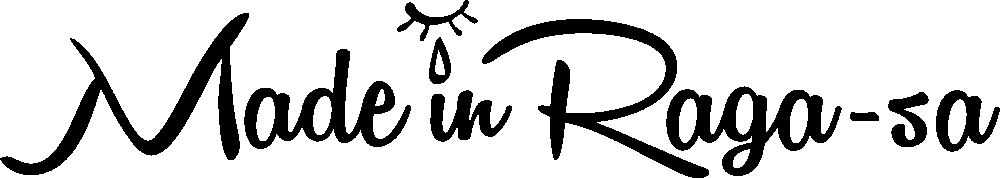

Music

Biography
2015年3月、一卵性双生児のVo./Gt.ItsukiとGt./Cho.Takumiを中心に結成し、
大阪を拠点に活動中。
略称 「ラガーサ」
感情的な演奏の中にどこか悲しいメロディーとストレートな歌詞を織り交ぜた、
誰かを救えるような音楽がコンセプト
- 2016年03月 結成1年目にしてワンマンライブを開催し、170人を動員。
- 高校生バンドフェス大会2016優勝、十代白書2016、2017と2年連続JANUSで優勝し
2017年度の決勝大会（＠心斎橋BIGCAT）ではグランプリを獲得。 - 2017年09月 KANSAI LOVERS 2017出演。MINAMIWHEEL2017出演。
- 2017年12月 新メンバーBa.タッカー、Dr.泰尊が加入。
- 2018年02月 SILENT SIREN ワンマンライブO.A出演。(@東京 EX-THEATER)
- 2018年03月 初の３マンライブ開催。約３００人近くを動員。
十代白書2018にGuest出演。 - 2018年夏 史上初のMVを公開。
- 2018年11月27日 1st Single「アシミレイト」をリリース。それに伴い自主企画を心斎橋JANUSにて開催。
出演バンドも含めたライブ・オフショットの写真展を同時開催し、
大盛況に終わる。 - 2019年01月 2本目のMV「妄想男子K」を公開。完全自主制作でワンカット撮影に挑んだ。
- 2019年1月13日 新人発掘オーディション「GIANT LEAP」で優勝。
GRAND GIANT LEAP PRIZEを獲得する。 - 2019年5月6日 GOLDRUSH2019出演。
- 2019年7月6日 見放題2019出演。
- 2019年9月15日 TOKYO CALLING2019出演。9月29日 7秒とロック出演。
- 2019年10月11日 Mini Album「and A」からMV「シグナル」を公開。
- 2019年10月12日 10月25日下北沢ReGにて東京での初企画開催。
- 2019年11月2日 KNOCK OUT FES2019出演。
- 2019年11月20日 初の全国流通CD Mini Album「and A」リリース。
- 2019年12月17日 Mini Album「and A」からMV「あなたを想う歌」を公開。
- 2020年6月26日 Mini Album「and A」からMV「0.6」を公開。Takumi(Gt./Cho.)が監督を務めた。